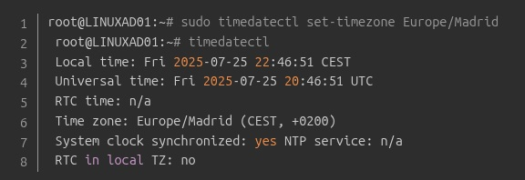
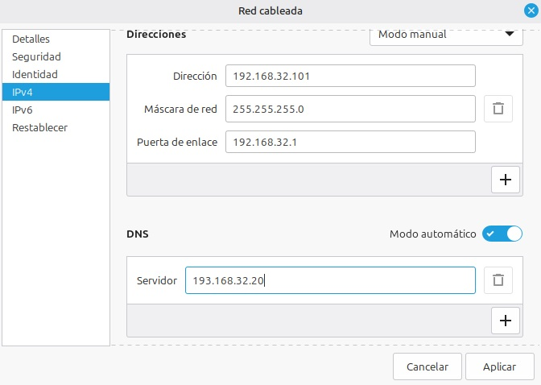
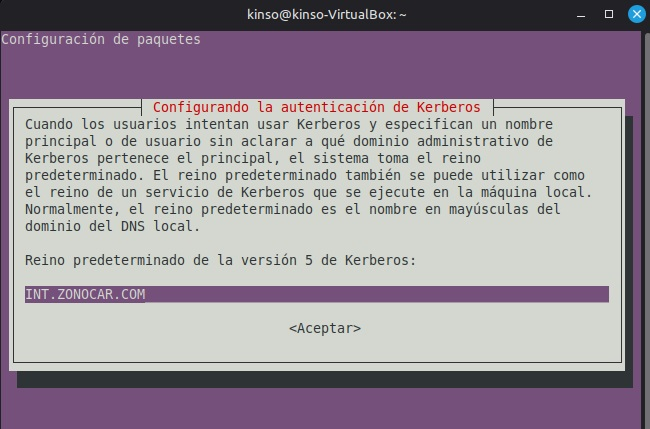
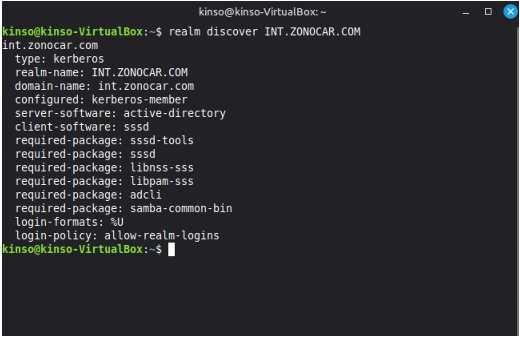
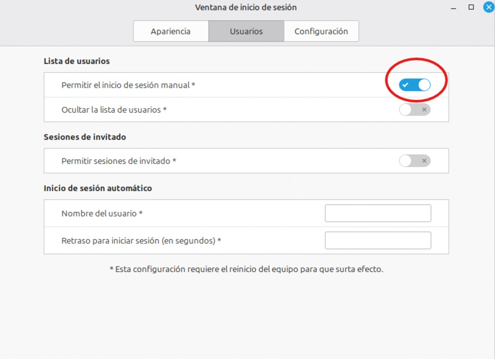

Para continuar vamos a asegurarnos de que la hora esté sincronizada (Kerberos es muy tiquismiquis con esto).en la consola metemos los siguientes comandos

Antes de empezar vamos a asegurarnos de que tenemos conexión de red con el controlador de dominio. Primero vamos a añadir la máquina virtual de Linux al dominio para que los usuarios creados en el servidor puedan acceder desde el equipo. Iniciamos la máquina virtual de Linux, como no tengo todavía el servidor dhcp le voy a meter una ip manual para que se puedan ver (hacer ping) los dos equipos.

Nota: en la imagen la pestaña de dns modo automático debe de estar desactivada.
Para continuar vamos a asegurarnos de que la hora esté sincronizada (Kerberos es muy tiquismiquis con esto).en la consola metemos los siguientes comandos

Ahora vamos a instalar las herramientas necesarias para la
comunicación con Active Directory, abrimos el cmd y ponemos el
siguiente comando:
sudo apt update
para instalar las actualizaciones y después para instalar los
paquetes necesarios escribimos el siguiente comando:
sudo apt install realmd sssd sssd-tools libnss-sss libpam-sss
adcli samba-common-bin oddjob oddjob-mkhomedir krb5-user
packagekit -y
Durante la instalación de krb5-user, te pedirá el "Default Kerberos
realm". Escríbelo en MAYÚSCULAS: INT.ZONOCAR.COM.

Ahora podemos comprobar si todo ha ido bien para ello en la consola
escribimos el siguiente comando:
En mi caso:
realm discover int.zonocar.com
Debería devolver algo así

El siguiente paso será unir el equipo al dominio, escribimos en la
consola:
Sudo realm join INT.ZONOCAR.COM –U administrador
Con esto tenemos el equipo asignado al dominio.
Comprobamos en el servidor dentro de usuarios y equipos de Active
Directory que el equipo está dentro del dominio.
El siguiente
paso será loguearse al equipo con un usuario creado en el servidor,
para ello (porque Linux no nos permite de inicio loguearnos con
nadie que sea distinto del administrador del equipo), vamos a menú
de inicio, administración y en ventana de inicio de sesión,
introducimos nuestra contraseña, en la pestaña de usuarios marcamos
la pestaña de Permitir el inicio de sesión manual.

Ahora debemos configurar el Home Directory: Para ello editamos el
archivo que gestiona el inicio de sesión de un usuario usamos el
comando:
sudo nano /etc/pam.d/common-session
Dentro del archivo al final introducimos la siguiente línea:
sesión required pam_mkhomedir.so skel=/etc/skel umask=0022
Que hace esta línea exactamente?
Guardamos y cerramos el archivo.
Por último para que no tengamos que loguearnos al inicio con el
nombre completo por ejemplo con pumuky@int.zonocar.com modificamos
el siguiente archivo con el comando:
sudo nano /etc/sssd/ssd.conf
y
en la línea que
use_fully_qualified_names = True
la dejamos asi:
use_fully_qualified_names = False .
Ahora ya podremos loguearnos con los usuarios creados en el
servidor.